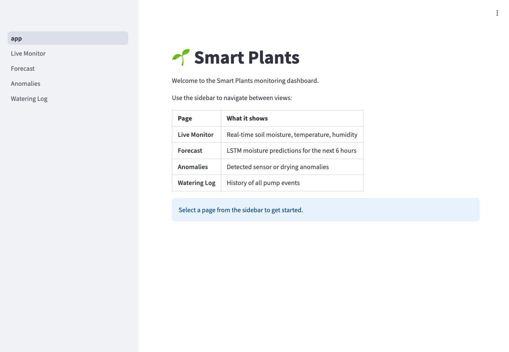

Smart Plants
ESP32 + FreeRTOS firmware for periodic capacitive soil moisture sensing, paired with a Raspberry Pi companion service running a small ML model that decides when to actually water — closing the loop with a MOSFET-driven pump and an LCD status panel.
Overview
My plants kept dying because I'd forget to water them for a week and then overwater them trying to compensate. The solution was a system that measures soil moisture on a regular schedule and triggers the pump when it's actually needed — not when I happen to remember.
The firmware runs on FreeRTOS, which gave me a natural way to structure the periodic sensing, control logic, and any future display or connectivity tasks as separate concurrent tasks with well-defined priorities.
How it works
ESP32 firmware on FreeRTOS
The ESP32 firmware runs on FreeRTOS and schedules a soil moisture reading every 15 minutes via a capacitive sensor on the ADC. Between readings the chip drops into deep sleep, which keeps the idle current draw low enough that the system can run off a small power supply without breaking a sweat. When a watering command comes in, the firmware drives a MOSFET that gates the pump — the MCU itself never has to source pump current, just the gate signal.
Capacitive sensors were the right choice over resistive: they measure the dielectric constant of the soil rather than passing current through it, so they don't corrode and they give stable readings over months in damp soil.
Raspberry Pi companion + ML model
The decision of when to actually water lives on a Raspberry Pi running as a companion service rather than on the MCU. The ESP32 publishes its moisture readings to the Pi, a small ML model on the Pi consumes the time-series, and the Pi sends back watering commands when the model decides irrigation is needed.
Splitting it that way kept the firmware simple and the decision-making flexible: model updates happen on the Pi without re-flashing the MCU, and the Pi can pull in additional context (recent watering history, plant type, even ambient conditions) that the ESP32 wouldn't have access to on its own. The ESP32 stays as a deterministic sensor and actuator; the Pi handles the intelligence.
LCD interface
A local LCD shows current moisture level, the last watering event, and a status indication for whether the plant is happy. On-device logging keeps a record of recent readings and watering events so I can scroll through the history without needing to look at the Pi side.

Key challenges
The biggest problem was ADC noise. The ESP32's internal ADC is notoriously noisy, especially at the edges of its range (near 0V and near 3.3V). Raw readings from the moisture sensor would swing by 50–100 counts between samples, which was enough to trigger false watering events. I added a sliding window average over eight samples and a hysteresis band around the watering threshold — the relay only triggers when the smoothed reading drops below the threshold, and only resets when it rises meaningfully above it.
Getting the relay timing right was also trickier than expected. Running the pump for too long floods the pot; too short and the soil barely registers the moisture increase before the next reading. I ended up tuning the watering duration empirically per-plant based on pot size and how quickly the reading recovers.
What's next
I'm working on adding a small display that shows current moisture level, last watering time, and next scheduled check. A Wi-Fi task for logging readings to a simple dashboard would also be useful — I want to see moisture trends over days to better understand how different plants use water.